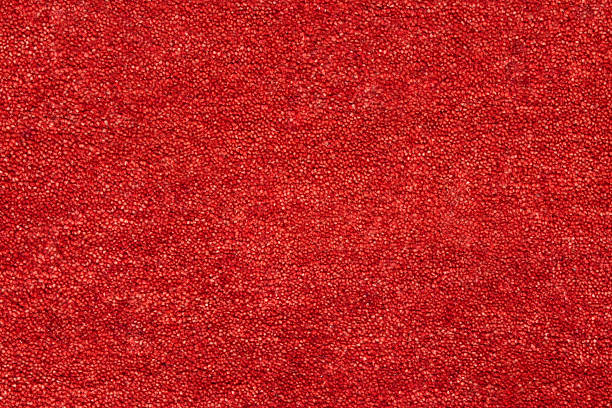

Riverdale Park Maryland
info@topcarpetflooring.pro
Riverdale Park Maryland
info@topcarpetflooring.pro

At Riverdale Park Maryland we provide exceptional carpet and flooring installation services. From hardwood to luxury vinyl, we ensure your home gets durable, stylish flooring.
Click Here To Call Us (877) 848-1711When it comes to finding top-quality carpet and flooring solutions in Riverdale Park Maryland look no further. Our expert team at Carpet and Flooring offers a wide range of services, including carpet installation, hardwood flooring, tile, laminate, and luxury vinyl plank (LVP) options. Whether you're renovating your home, office, or commercial space, we provide customized flooring solutions that match your needs and style.
We understand that selecting the right flooring is crucial for both aesthetics and durability. That’s why we offer only the highest quality products from leading brands, ensuring your floors last for years to come. Our professional installation team guarantees precise and seamless installation, ensuring that your floors look flawless every time.
As the trusted choice for flooring services in Riverdale Park Maryland we pride ourselves on exceptional customer service, attention to detail, and competitive pricing. Whether you’re looking for plush carpets, elegant hardwood floors, or modern vinyl options, our team is dedicated to helping you find the perfect flooring solution for your space.
Don't settle for less. Choose Carpet and Flooring for expert flooring services in Riverdale Park Maryland . Contact us today for a free consultation and discover why we are the best choice for your carpet and flooring needs!
Residential & commercial Carpet and Flooring
Quality services at affordable prices
Immediate 24/ 7 emergency services


Looking for top-tier carpet and flooring services in Riverdale Park Maryland ? At Premium Carpet and Flooring, we specialize in providing high-quality flooring solutions tailored to meet your needs. Whether you're updating your home or enhancing a commercial space, our expert team offers exceptional service, using only the finest materials to deliver stunning results that will last for years.
Our wide range of flooring options includes luxurious carpets, hardwood, laminate, and vinyl. We offer professional installation services that ensure your floors are not only beautiful but also durable. As the best carpet and flooring company in Riverdale Park Maryland we pride ourselves on our attention to detail, customer satisfaction, and unbeatable pricing. We understand that your floors are an investment, which is why we take extra care to install them flawlessly and efficiently.
Why choose Premium Carpet and Flooring? Our experienced professionals provide personalized recommendations based on your style, budget, and preferences. From design consultation to installation, we handle every aspect of your flooring project with precision and care.
With a commitment to excellence, we have built a solid reputation across Riverdale Park Maryland for delivering flooring solutions that transform spaces and exceed expectations. Contact us today for a consultation and discover why we're the trusted name in carpet and flooring services in Riverdale Park Maryland .
Residential & commercial Carpet and Flooring
Quality services at affordable prices
Immediate 24/ 7 emergency services
Finding reliable flooring contractors near you is key to ensuring your flooring project is executed flawlessly. Our skilled team in Riverdale Park Maryland is comprised of highly-trained professionals with extensive experience in all aspects of flooring installation, from initial consultations to final inspections.
We handle everything from residential to commercial projects, providing tailored solutions for each client's specific needs. Our reputation for excellent customer service, high-quality workmanship, and timely project completions makes us the trusted choice for flooring contractors in the area. When it comes to your flooring, take comfort in knowing that we are the experts you can count on.

Laminate flooring is an excellent choice for those seeking a beautiful yet budget-friendly flooring option. With advancements in technology, laminate can now convincingly mimic the appearance of hardwood, stone, or tile while offering practicality and durability. Our laminate flooring installation services are designed to give your home a fresh new look without the hefty price tag.
Why Choose Us for Laminate Flooring Installation?
1. **Stylish Choices**: We carry a diverse range of laminate styles and finishes, allowing homeowners to find the perfect design for their space.
2. **Durability**: Laminate flooring is designed to withstand scratches, dents, and fading, making it ideal for high-traffic areas.
3. **Quick Installation**: Our experienced installers work efficiently to minimize disruption and provide a seamless flooring experience.
4. **Easy Maintenance**: With its resistance to stains and moisture, laminate flooring is easy to clean, making it a practical option for busy households.
Enhance your home’s beauty and functionality with laminate flooring installed by our skilled team in Riverdale Park Maryland .

Laminate flooring offers an attractive option for those seeking the look of hardwood or tile without the hefty price tag. Our laminate flooring installation services provide you with high-quality, stylish solutions that fit your budget. With a wide selection of designs and finishes, you can achieve the aesthetic you desire while ensuring durability and ease of maintenance. Our expert installers are trained in the latest methods to ensure a flawless installation that maximizes the longevity and performance of your laminate flooring. Whether you're updating a single room or an entire home, we guarantee premium service and exceptional results.

Flooring installation for homes is a significant decision that can transform your living space. Our company specializes in providing professional and dependable flooring installation services tailored to meet the unique needs of homeowners in Riverdale Park Maryland . We offer a wide selection of flooring materials and styles, ensuring you get the perfect fit for your home.
Why Choose Us for Your Home’s Flooring Installation?
1. **Tailored Solutions**: We work closely with you to determine the best flooring options based on your preferences, lifestyle, and budget.
2. **Quality Assurance**: Our team is highly trained in installation techniques for various flooring materials, ensuring a flawless finish.
3. **Timely Installation**: We respect your time and aim to complete installations promptly without sacrificing quality.
4. **Satisfaction Guarantee**: Your satisfaction is our top priority. We won’t rest until you're thrilled with your new floors.
Transform your home with our expert flooring installation services. Contact us today for reliable flooring installation .

When it comes to flooring installation for homes, our dedicated team has the experience and know-how to achieve stunning results. Every home is unique, and we tailor our services to suit your specific design vision and requirements.
Our process begins with a thorough consultation to understand your preferences, followed by expert guidance on material selection and design. We pride ourselves on our meticulous attention to detail during installation, ensuring that your new floors are not only beautiful but also installed correctly for long-lasting durability. When you choose us, you can rest assured that your housing project is in great hands.
An office space requires flooring that matches its professional environment and is durable enough to handle frequent foot traffic. Our office flooring installation services in Riverdale Park Maryland cater to businesses looking for stylish and functional options.
We offer a variety of flooring solutions, from carpets to tiles and vinyl, tailored to meet the demands of any workplace. Our skilled team understands the importance of minimizing disruptions during installation, so we work quickly and efficiently while maintaining the highest quality standards. Enhance your office environment with our flooring solutions, designed to impress clients and support staff productivity.

Updating your carpets can breathe new life into your home, but the process of removing old carpeting can be daunting. Our carpet removal and installation services are designed to make this experience easy and stress-free. We handle everything from removing your old carpet to expertly installing the new one, ensuring a seamless transition.
Why Choose Us for Carpet Removal and Installation?
1. **Streamlined Process**: Our experienced team manages every step of the process, providing you with a hassle-free experience from start to finish.
2. **Efficient Removal**: We use specialized equipment and techniques to remove your old carpeting quickly and safely, minimizing mess and disruption.
3. **Professional Installation**: Our skilled installers ensure your new carpet is laid properly, enhancing both appearance and longevity.
4. **Customer-Centric Approach**: We are committed to your satisfaction, keeping you informed throughout the process and addressing any concerns you may have.
Experience the ease of carpet removal and installation with our expert services .

Upgrading your floors can be a daunting task, but our carpet removal and installation services make the process straightforward and stress-free. If it's time for a new look, our team will efficiently remove your existing carpet and prepare your space for fresh installation.
We handle everything from the removal process to the careful installation of your new carpeting, ensuring that all areas are clean and ready for use after the job is completed. Our friendly and experienced crew prides themselves on maintaining a high level of professionalism and respect for your home. Count on us for hassle-free carpet removal and installation that transforms your space beautifully.
Years Experience
Expert Technicians
Satisfied Clients
Compleate Projects
When it comes to enhancing the beauty and functionality of your home or business in Riverdale Park Maryland Top Carpet Flooring is the name you can trust. With years of experience serving homeowners and businesses across all cities in Riverdale Park Maryland we pride ourselves on delivering exceptional results tailored to your unique needs.
At Top Carpet Flooring, we believe every space deserves a touch of elegance and durability. That’s why we offer an extensive selection of high-quality carpets, hardwood, laminate, vinyl, and tile flooring. Our team works closely with you to understand your preferences and recommend flooring solutions that blend seamlessly with your style and budget.
What sets us apart? Our commitment to quality craftsmanship and customer satisfaction. From initial consultation to professional installation, our skilled team ensures every project is handled with precision and care. We also use the latest techniques and top-notch materials to guarantee long-lasting results you’ll love for years to come.
Our dedication to providing competitive pricing without compromising on quality has earned us a reputation as the go-to flooring experts in Riverdale Park Maryland . Plus, our transparent process ensures no hidden fees or surprises, making your experience smooth and stress-free.
Discover why residents and businesses across Riverdale Park Maryland consistently choose Top Carpet Flooring. Contact us today for a free consultation and let us transform your space with beautiful, durable flooring solutions that stand the test of time.
In today's world, ensuring your home is both stylish and comfortable starts from the ground up. At our company, we specialize in providing high-quality residential carpet and flooring installations that cater to your unique style and needs. When choosing flooring for your residence, it’s essential to consider not only aesthetics but also durability, maintenance, and comfort. We offer a vast selection of carpets, hardwoods, vinyl, and more to enhance your living space. Our experienced team is dedicated to delivering exceptional craftsmanship and unparalleled customer service.
Why Choose Us for Residential Carpet Installation?
1. **Expert Guidance**: We understand that selecting the right carpet can be overwhelming. That's why our skilled flooring consultants are here to help you navigate our extensive range of options.
2. **Quality Products**: We source our carpets from reputable manufacturers known for their durability and eco-friendly materials. This commitment to quality means you can enjoy your flooring without concerns about wear and tear.
3. **Professional Installation**: Our installation team is comprised of seasoned professionals who take pride in their work, ensuring that every carpet is laid smoothly and correctly.
4. **Customer Satisfaction**: We put our customers first. From the moment you contact us to the final walkthrough after installation, our team will ensure you’re completely satisfied with your new floor.
Don’t just settle for ordinary flooring; transform your home with our premium carpet and flooring services .
Transforming your home with beautiful, comfortable carpets is easy with our residential carpet installation services . Our professional team understands the importance of creating a cozy environment for your family, and we are here to help every step of the way. From selecting the right carpet to precise installation, we ensure that your experience is seamless. Our extensive range of carpets includes options that complement any home décor—whether modern, traditional, or eclectic. We use advanced installation techniques to ensure that your carpet not only looks fabulous but also stands up to the rigors of everyday life. Moreover, our team is trained to handle any unexpected challenges during the installation process, so you can trust us to deliver impeccable results that add value to your home.
In the competitive business landscape of Riverdale Park Maryland a professional and polished environment is crucial. Our commercial flooring services cater to offices, retail, and any commercial spaces that require durable and stylish flooring. We understand that every business has unique needs, and we offer customized solutions that enhance both functionality and aesthetics.
From luxury vinyl to commercial-grade carpets, we provide a vast selection of flooring options designed to withstand high foot traffic while maintaining their elegance. Our experienced team works closely with you to execute the installation efficiently, ensuring minimal downtime for your business operations. We also offer flexible scheduling options to avoid disruptions, making us one of the best choices for commercial flooring services in the area.
Quality flooring doesn't have to come with a hefty price tag. At our company, we believe everyone in Riverdale Park Maryland deserves beautiful, durable flooring at an affordable price. Our selection of budget-friendly carpet and flooring options doesn’t skimp on quality.
We work directly with manufacturers to pass on discounts and special offers to our customers, ensuring that you find the perfect flooring solution that fits your budget. Our team is adept at finding the best options for your space while keeping your financial constraints in mind. With our transparent pricing and no hidden fees, you can trust that you're getting the best value without compromising on quality.
Your home is your sanctuary, and every detail should reflect your personal style. Our custom flooring installation services are designed to fulfill that vision, allowing you to choose from a wide range of materials, colors, and textures tailored to your preferences. Whether you prefer the timeless beauty of hardwood or the innovative designs of luxury vinyl, our team is here to bring your ideas to life.
Reasons to Choose Us for Custom Flooring:
1. **Personalized Design Services**: Our design experts will work alongside you to create a cohesive look that complements your home’s aesthetic.
2. **High-Quality Materials**: We source our products from top manufacturers to provide you with the best quality flooring that stands the test of time.
3. **Seamless Coordination**: From initial consultation to installation, we ensure smooth communication and coordination at every stage of the process.
4. **Satisfaction-Focused**: Our job isn't done until you are completely happy with your new floors.
Transform your space with custom flooring solutions that are uniquely you. Contact us for expert custom flooring installation .
Hardwoods are synonymous with elegance and durability. Our hardwood flooring installation services offer an incredible blend of aesthetic appeal and longevity that can increase the value of your property. One of the many reasons hardwood remains a popular choice among homeowners is its ability to suit various décor styles, from modern to rustic.
Why Choose Us for Hardwood Flooring Installation?
1. **Expert Craftsmanship**: Our installation professionals are highly trained and experienced. They understand the intricacies of working with hardwood and are dedicated to ensuring precision in every installation.
2. **Diverse Selection**: We offer a wide range of hardwood species, finishes, and styles for you to choose from, allowing you to create a unique look for your home.
3. **Sustainable Practices**: We are committed to environmentally responsible practices, sourcing our hardwood from sustainable forests.
4. **Post-Installation Support**: We don’t just install your hardwood; we also provide you with care tips to ensure your floors remain beautiful for years to come.
Elevate your home with the timeless beauty of hardwood flooring. Choose us for reliable hardwood flooring installation .
Hardwood flooring is a timeless choice that adds warmth and elegance to any space. Our hardwood flooring installation services are designed for homeowners who appreciate quality and style. With a variety of species, finishes, and engineered options, we offer something for every taste and budget.
Our skilled installers will handle the entire process with precision and care, ensuring a stunning finish that enhances the natural beauty of the wood. We focus not just on aesthetics but also on the durability and longevity of the floors we install. When you invest in hardwood flooring with us, you are choosing a timeless solution that will elevate your space for years to come.
Transform your living space with our comprehensive carpet installation services . Our team specializes in providing top-quality carpet solutions tailored to your needs. From selection to installation, we handle every aspect with professionalism, ensuring a smooth experience for our customers.
With our extensive range of carpets, we cater to various tastes and budgets. Our goal is to deliver exceptional quality to help you find the perfect fit for your space. Our trained installation professionals use precision techniques to achieve a seamless and long-lasting installation, allowing you to appreciate the comfort and appearance of your new carpet without worry.
Is your flooring showing signs of wear and tear? Our flooring repair services are here to help restore your floors to their original glory. From scratches and dents in hardwood to stains and tears in carpet, our experienced team can repair a variety of flooring types effectively.
We understand that damaged flooring can affect the beauty and functionality of your space. That’s why we offer quick and affordable repair solutions to extend the lifespan of your floors. Our technicians utilize advanced repair methods, ensuring that the repair blends seamlessly with your existing flooring. Trust us to give your floors the care they deserve while minimizing costs and disruptions.
Vinyl flooring is an increasingly popular choice due to its versatility, durability, and low maintenance. Our vinyl flooring installation service allows you to explore a wide array of designs, colors, and textures that can mimic natural materials like wood or stone.
Choosing vinyl means enjoying water resistance, making it perfect for kitchens, bathrooms, and high-traffic areas. Our skilled installation team ensures a flawless application that enhances the look and longevity of your vinyl floors. We prioritize customer satisfaction, tailoring our services to meet your specific needs while giving you beautiful flooring that is built to withstand the test of time.
Searching for a carpet and flooring store near me in Riverdale Park Maryland ? Our locally-owned store is the ideal destination for all your flooring needs. With a vast selection of carpets, hardwood, vinyl, and laminate flooring, we ensure that every customer finds the perfect products to suit their style and budget.
Our knowledgeable staff is always available to provide guidance and answer any questions you may have. We believe in building long-term relationships with our customers, and our customer-first approach shows in every interaction. When you come to our store, you can expect expert advice and outstanding customer service that will make your flooring shopping experience enjoyable.
Elevate your home’s style with luxury vinyl plank flooring (LVP). It offers the perfect blend of beauty and functionality, providing the look of hardwood or stone while being more resilient and budget-friendly. Our luxury vinyl plank flooring installation service ensures you enjoy all the benefits while receiving professional advice and expert installation.
Our extensive collection of LVP comes in an array of designs, finishes, and textures that cater to every design aesthetic. With our experienced installation team, you can enjoy a flawless and efficient installation that allows you to enjoy your new floors in no time. Choose luxury vinyl plank for a stunning and practical flooring solution that stands the test of time.
Combining the softness of carpet with the durability of tile offers unique design opportunities, and our carpet and tile installation services will help you achieve that perfect balance. We understand that every space is different, and we provide customizable solutions tailored to your specific needs. Our experts help you choose the right styles, colors, and patterns to create stunning transitions between carpet and tile, enhancing both aesthetic appeal and functionality. We pride ourselves on meticulous installation practices that ensure both carpet and tile are laid beautifully and effectively, minimizing wear and tear over time. Trust our experienced team to deliver exceptional results in your space, providing both comfort and style.
If your flooring is worn out, damaged, or simply not reflecting your style anymore, our flooring replacement services can help. We specialize in transforming tired spaces with modern, high-quality flooring options that rejuvenate your home or business. Our comprehensive process starts with a consultation where we help you select the best materials that suit your lifestyle and budget. Once you've made your choice, our experienced installation team will remove the old flooring swiftly and safely, making way for your new beautiful flooring. We handle everything from start to finish, ensuring your replacement experience is hassle-free and satisfying. With our commitment to quality, your new flooring will provide both function and beauty for years to come.
Blending both carpet and hardwood in your home can create a stunning aesthetic that enhances both comfort and style. Our carpet and hardwood installation services offer homeowners the opportunity to combine these materials effectively, creating distinct zones in your home while enjoying the benefits of each.
Why Choose Our Carpet and Hardwood Installation?
1. **Design Flexibility**: Our experts can help you design a flooring plan that combines the warmth of hardwood with the comfort of carpet, tailored to your unique space.
2. **High-Quality Products**: We provide only the best hardwood and carpet options, ensuring lasting beauty and performance.
3. **Seamless Transitions**: Our installation process guarantees smooth transitions between different flooring types, enhancing your home’s overall aesthetics.
4. **Customer Satisfaction**: We are committed to ensuring that you are delighted with your new flooring, providing comprehensive support throughout the installation process.
Transform your home with the perfect blend of carpet and hardwood. Trust our team for skilled installation services .
Waterproof flooring is a smart choice for areas prone to moisture, such as kitchens, bathrooms, and basements. Our waterproof flooring options combine style with practical protection against water damage. With our waterproof flooring installation services, you can enjoy the look of hardwood, tile, or luxury vinyl while ensuring your floors are safe from spills and moisture.
Why Choose Us for Waterproof Flooring Installation?
1. **Diverse Selection**: We offer a variety of waterproof flooring styles, ensuring that you find the perfect match for your home's interior.
2. **Durability**: Our waterproof options are designed to withstand high humidity and accidental spills, making them ideal for busy households.
3. **Expert Installation**: Our experienced team ensures accurate and efficient installation to maximize the effectiveness of your waterproof flooring.
4. **Maintenance Support**: We provide guidance on caring for your new floors, helping you maintain their appearance and durability.
Protect your home with our reliable waterproof flooring installation services in Riverdale Park Maryland .
Life can be unpredictable, which is why waterproof flooring is an excellent choice for any environment. Our waterproof flooring installation services cater to homes and businesses looking for durable, water-resistant options that maintain their beauty despite potential spills or moisture.
We provide a variety of waterproof flooring solutions, including luxury vinyl, tile, and laminate, that can withstand the rigors of everyday life. Our experienced installation team ensures that your new flooring is installed correctly to preserve its waterproof properties. When you choose us, you're making a wise investment in flooring that safeguards your space against water damage.
Looking to enhance the beauty and comfort of your home or business? Our expert carpet installation and flooring solutions in Riverdale Park Maryland provide the perfect upgrade to any space. Whether you're renovating your living room, office, or entire property, our high-quality flooring options are designed to meet your needs and exceed your expectations.
At Carpet and Flooring, we offer a wide variety of flooring choices, including plush carpets, elegant hardwood, durable laminate, and modern tile. Our professional team ensures a seamless installation process, delivering precise craftsmanship and attention to detail. With years of experience in the industry, we understand the unique needs of Riverdale Park Maryland residents and businesses, providing customized solutions that perfectly complement your space and lifestyle.
Our team uses the latest techniques and premium materials to guarantee long-lasting results, whether you're upgrading for comfort, style, or practicality. We prioritize your satisfaction, ensuring timely installations with minimal disruption to your routine.
Ready to transform your space with exceptional carpet installation and flooring services in Riverdale Park Maryland ? Contact us today for a free consultation and let our experts guide you in choosing the best flooring solution for your property. Experience the difference of professional flooring services that elevate your space and add lasting value.
Riverdale Park, formerly known and often referred to as Riverdale, is a semi-urban town in Prince George's County, Maryland, United States, a suburb in the Washington, D.C., metropolitan area. The population was 6,955 as of the 2010 U.S. Census. The population as of 2019 is approximately 7,304, according to the US Census Bureau and other entities.
With top-quality products, expert installation, and exceptional customer service, Top Carpet Flooring is the trusted choice .
Absolutely! Top Carpet Flooring offers waterproof flooring, perfect for areas like bathrooms and basements .
Vinyl flooring is an excellent choice for kitchens as it is water-resistant, durable, and easy to maintain.
Yes, Top Carpet Flooring is experienced in installing flooring in multi-story homes across Riverdale Park Maryland .
At Top Carpet Flooring, we offer a wide variety of options, including plush carpets, hardwood, laminate, vinyl, and tile flooring, ensuring the perfect match for your style and needs .
Regular sweeping, gentle cleaning solutions, and avoiding excess water help maintain hardwood floors from Top Carpet Flooring in Riverdale Park Maryland .
Our experts at Top Carpet Flooring can help you choose the perfect flooring by considering factors like durability, style, and budget.
Same-day installation may be available depending on the project size and material; contact Top Carpet Flooring in Riverdale Park Maryland for details.
Yes, Top Carpet Flooring specializes in stair carpet installation, enhancing safety and aesthetics in your Riverdale Park Maryland property.
Regular vacuuming, professional cleaning, and immediate stain treatment are essential for maintaining your carpet from Top Carpet Flooring .
Pet-friendly options like laminate and waterproof vinyl are ideal, and Top Carpet Flooring offers a variety of these durable choices .
The installation time depends on the project's size and complexity, but our team at Top Carpet Flooring ensures timely and efficient service in Riverdale Park Maryland .
Absolutely! Top Carpet Flooring offers a range of eco-friendly flooring options, including sustainable materials and low-VOC products .
Yes, Top Carpet Flooring provides flooring samples to help you make an informed choice for your Riverdale Park Maryland home or office.
Yes, we prioritize safety and offer low-VOC and hypoallergenic flooring options for families .
With proper care, hardwood flooring from Top Carpet Flooring can last for decades, adding beauty and value to your Riverdale Park Maryland home.
Our design experts at Top Carpet Flooring can help you choose flooring that complements your home’s decor .
Carpet installation costs vary based on the material and project size. Contact Top Carpet Flooring for a detailed quote.
Yes, our team at Top Carpet Flooring specializes in carpet repairs to restore your flooring's beauty and functionality .
Yes, we offer moisture-resistant flooring options like vinyl and tile, perfect for basements .
Yes, Top Carpet Flooring offers professional carpet installation services ensuring a flawless fit for your home or business.
Yes, you can easily schedule a consultation with our team at Top Carpet Flooring in Riverdale Park Maryland to discuss your project.
Yes, Top Carpet Flooring provides flexible financing options to make your dream flooring more affordable in Riverdale Park Maryland .
Yes, Top Carpet Flooring provides commercial flooring solutions tailored to businesses of all sizes in Riverdale Park Maryland .
Yes, we offer removal services to prepare your space for new flooring .
Yes, we provide free estimates to help you plan your carpet and flooring projects with confidence.
Hardwood flooring offers durability, timeless appeal, and added home value. Top Carpet Flooring provides top-quality hardwood options .
Yes, Top Carpet Flooring provides warranties on many of our flooring products for added peace of mind .
Laminate flooring is cost-effective, durable, and available in a wide range of designs, making it a popular choice in Riverdale Park Maryland .
Durable options like vinyl, tile, and engineered hardwood are ideal for high-traffic areas, and we provide these at Top Carpet Flooring in Riverdale Park Maryland .
Top Carpet Flooring in Riverdale Park Maryland delivered exactly what I needed—durable and stylish flooring for my busy household. Their laminate flooring has exceeded my expectations in both quality and design. Highly recommend their services!
Profession
Top Carpet Flooring in Riverdale Park Maryland is the best! Their team was friendly, knowledgeable, and very detail-oriented. The new carpet in my living room is beautiful and high-quality. Highly recommend their services!
Profession
I’ve recommended Top Carpet Flooring to all my friends and family in Riverdale Park Maryland . Their commitment to excellence and superior customer service is unmatched. My new carpet looks incredible, and I couldn’t be happier with my experience!
Profession
Riverdale Park MD Carpet and Flooring Pros
(877) 848-1711
info@topcarpetflooring.pro
09.00 AM - 09.00 PM
09.00 AM - 12.00 PM